Guia de classe
Gunlancer Blue: Build 113
Guia do Gunlancer de Combat Readiness (GL Blue / GL Azul), na build 113 Full CDR, feito em parceria com Secretasnman.
Atualizado em 14/10/2026 · guia ainda em ediçãoIdentidade
Postura defensiva (Z)
Desativar a postura defensiva (Z) não tem animação. Isso abre alguns truques de movimentação e de preenchimento da barra de identidade, explicados mais abaixo.
Utilidade para o grupo
Escudos e stagger
O estilo ativo da build fornece escudos e stagger contínuos para a equipe, o que a torna excelente para progressão.
Visão geral
Este guia é focado na build 113 do Ark Passive. O nome vem da ordem dos cores que você utiliza no Ark Grid.
Origem e conceito
- Objetivo inicial: a build foi desenvolvida pelo criador do guia, Secretasnman, ao buscar uma forma de encaixar dois Guardian's Thundercrack dentro de uma única janela de Atrophine, sem depender de procs aleatórios (como Quick Recharge ou Conviction/Judgment) e sem sacrificar crit por swiftness.
- Desenvolvimento e testes: descobriu-se que os cores de Sol e Lua do Ark Grid forneciam o CDR necessário. A eficácia foi confirmada em raids reais (como Kazeros TFM Gate 1), com o maior parse da época.
Vantagens e desvantagens
Prós
- Maior teto de DPS da classe quando executada corretamente, combinando dano alto com muita utilidade para o grupo.
- Estilo de jogo muito ativo (piano playstyle), com escudos e stagger infinitos para a equipe. Excelente para progressão.
- Torna obsoletas as builds focadas só em stagger (Princess Maker) em conteúdo de busting.
Contras
- Exige alto uptime no chefe e muitas ações por minuto (APM).
- Taxa de crítico baixa (por volta de 60%) e é mais difícil de dominar.
- Sofre com a Colisão de CDR.
Build 113 x build 111
- Maior desempenho em raids reais: nos testes do criador, a 113 supera a 111 em DPS total durante as raids.
- Dois Guardian's Thundercrack na Atrophine: o CDR dos cores do Ark Grid permite encaixar os dois em uma única janela de forma consistente. Na 111, isso dependia de sorte com procs (Quick Recharge ou Conviction/Judgment) ou de sacrificar crit para colocar pontos em swiftness.
- Teto de dano elevado com utilidade: a 113 atinge o maior teto de DPS possível para o Blue Gunlancer, mantendo stagger e escudos contínuos.
Colisão de CDR
- O que é: acontece no meio da rotação, quando várias skills de DPS saem do tempo de recarga exatamente ao mesmo tempo. As skills usadas em 4º ou 5º lugar da sequência ficam esperando as anteriores terminarem as animações e perdem o benefício da redução de recarga.
- Como mitigar: use um sistema de prioridades adequado e invista em velocidade de ataque, para concluir as animações mais rápido.
Sistema de prioridades (113 Full CDR)
O sistema existe para evitar a colisão de CDR, e não para soltar primeiro as skills de maior dano. Se você priorizar cegamente os golpes mais fortes, o DPS da build diminui. Como as skills têm recargas diferentes, não existe uma rotação fixa.
- Prioridade V1 (básica): lógica mais simples e direta de executar. É a mais recomendada para a maioria dos jogadores.
- Prioridade V2 (avançada): exige monitorar o tempo de recarga de quatro skills (Leap Attack, Shield Charge, Guardian's Thundercrack e a skill T). Shield Shock ganha prioridade maior na sequência, mas só se usá-la ajudar a reduzir a recarga dessas quatro.
- Velocidade de ataque: invista pelo bracelete, vinho, runas e passivas. Assim as skills em 4º ou 5º lugar entram em recarga mais cedo e não perdem o CDR.
- Exceção (boss phasing): só ignore o sistema e solte as skills de maior dano de imediato quando souber que o chefe vai entrar em mecânica ou ficar invulnerável em breve.
Skills
Lv. 14Shield ChargeJudgment
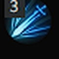
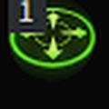
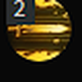



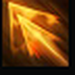
Lv. 7Dash Upper FireGalewind
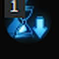


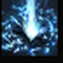
Lv. 14Shield ShockQuick Recharge

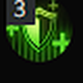
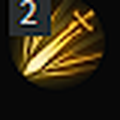


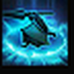
Lv. 14Leap AttackConviction
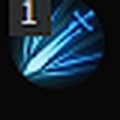
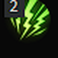
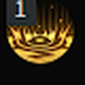



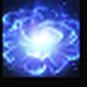
Lv. 10Nelasia's EnergyFocus
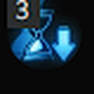
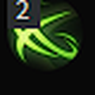


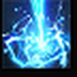
Lv. 14Guardian's ThundercrackGalewind
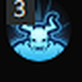
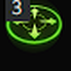
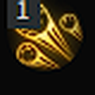



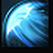
Lv. 14Shield BashVision
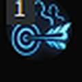
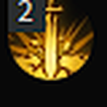


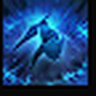
Lv. 11Shout of HatredWealth
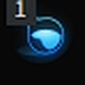
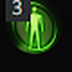
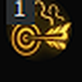



Runas e consumíveis
Em DPS bruto, a escolha de runas faz pouca diferença nesta build. O foco é qualidade de vida (QoL), o alto consumo de mana e a aceleração das animações. Consumível recomendado: vinho, pelo bônus de velocidade de ataque.
- Shout of Hatred: Wealth. Aumenta a geração de identidade. É a melhor opção para a skill.
- Shield Bash: Rage. Excelente iniciador de combate, aumenta a velocidade para acelerar o resto da sequência.
- Dash Upper Fire: Galewind. Acelera a animação inicial e facilita counters rápidos.
- Guardian's Thundercrack: Galewind. É a skill de maior dano e tem uma das animações mais lentas.
- Combo Conviction e Judgment. Use em skills de uso frequente (como Shield Bash e Shield Shock). Resolve a escassez de mana do estilo spammy, dispensa comida de mana e ainda dá CDR extra.
- Battlefield Shield: Quick Recharge. Ela não recebe CDR do Ark Passive (não gasta mana) nem do Ark Grid (não é skill azul).
- Nellasia's Energy: Focus. Reduz o custo de mana da skill.
Gravações
- Todas em 20/20. Barricade recebe +2 e Cursed Doll recebe +3 da pedra de habilidade.
- Stabilized Status pode ser usada no lugar de Cursed Doll ou de Barricade.
- Mass Increase não é viável: a perda de velocidade de ataque prejudica gravemente a build.
Ark Passive
Dicas
- Keen Sense é a melhor opção em 99% dos casos. Use Optimized Training 1 apenas se tiver duas linhas de velocidade de ataque no bracelete, o que ajuda a reduzir a colisão de CDR.
- Em Enlightenment, siga o padrão (pode colocar 2 pontos em Strategy Training). Em Leap, use Instant Spell nível 3.
- Busque valores altos de crit nos anéis e no bracelete, para compensar a baixa taxa de crítico base.
Evolution
Enlightenment
Leap
Código do Ark Passive
A4225EFD8B34D567E390FA9B00BC8AE447F2BE9C8CBB1F1C3841439F927242F89AEFF3C91382A50D5F91AF542F713FC61A3610EEEB71574019DACB6DBA9C4AB1
Ark Grid
- Cores: Shield Combo (Order Sun), Shield Arts (Order Moon) e Resounding Thunder (Order Star), nessa ordem de build (1, 1, 3).
- O Chaos Sun Core aceita tanto Flashy Attack quanto Swift Attack. Prefira Swift Attack, pelo bônus de velocidade de ataque.
Rotação de burst (janela de Atrophine)
Sequência otimizada para garantir dois Guardian's Thundercrack sem depender de procs aleatórios.
Truque da identidade (Z)
- Você pode desligar o Z durante a esquiva (barra de espaço) para correr em velocidade normal logo depois que a esquiva termina.
- Com Shout of Hatred no Z, desligue o Z antes do impacto da skill e ligue de novo em seguida. Isso preenche a barra de identidade e reduz bastante o risco de interrupção.
Resultados em raids
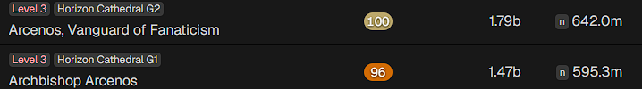
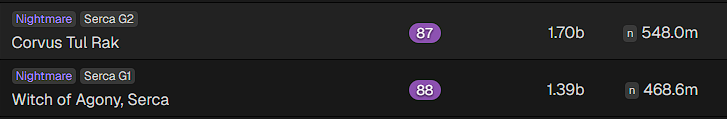
Créditos
Agradecimentos ao Secretasnman, que ajudou e permitiu usar o vídeo dele como referência.
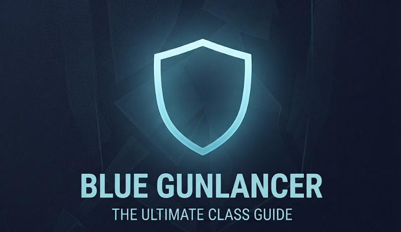
Guia ainda em edição. Contato no Discord: koijxd